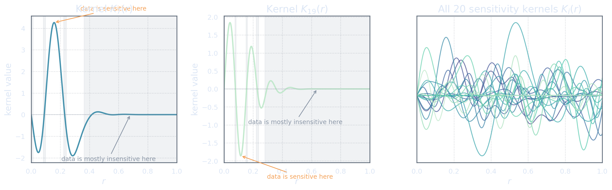
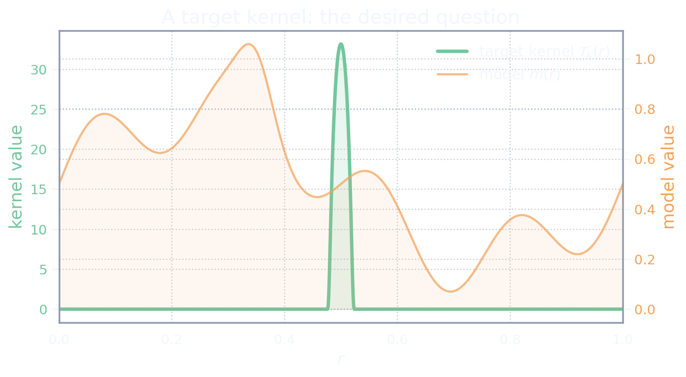

What the Data Can See
The unknown model
We begin with an unknown function \[m:\Omega\to\mathbb R,\] defined on a physical domain \(\Omega\). In a geophysical problem, \(\Omega\) might be an interval of depths, a radial coordinate inside a planet, a patch of the Earth's surface, or a three-dimensional region. To keep the first picture simple, we imagine that \[\Omega=[0,1],\] and that \(r\in\Omega\) is a spatial coordinate.
The function \(m(r)\) represents the model. It might be a velocity perturbation, a density variation, a temperature anomaly, a sound-speed profile, or any other physical field we would like to learn about. For now, the exact interpretation does not matter. What matters is that \(m\) is the object hidden behind the data.
At this stage, we will not yet be too fussy about the exact mathematical home of \(m\). Later, we may decide that \(m\) belongs to a Hilbert space \(\M\), perhaps something like \(L^2(\Omega)\) or a smoother Sobolev space. That choice will matter. It determines what it means for two models to be close, which functions are allowed, and which operations are continuous.
But we do not need that machinery yet. For the moment, the essential picture is this: \[\text{there is an unknown function }m(r),\text{ and the data only see it indirectly.}\]
The phrase “an unknown function” sounds innocent, but it is already hiding a modelling choice. Eventually we must say what kind of function \(m\) is allowed to be. If we do not make that choice explicitly, some later computational step will make it for us.
The important point is that we do not observe \(m(r)\) directly. We do not get to open the Earth, the star, the material, or the experiment and read off the function value at every \(r\). Instead, we observe numbers produced by an experiment. Those numbers are related to \(m\), but they are not \(m\) itself.
The rest of this chapter is about understanding what kind of relationship the data have with the model.
Sensitivity kernels
Suppose that our experiment gives us \(N_d\) data values. Associated with these data values are functions \[K_1(r),K_2(r),\dots,K_{N_d}(r).\] These are called sensitivity kernels.
Each kernel \(K_i\) describes how the \(i\)th datum responds to the model. If \(K_i(r)\) is large near some location, then the \(i\)th datum is sensitive to the model near that location. If \(K_i(r)\) is small or zero in a region, then the \(i\)th datum hardly sees that region at all.
A sensitivity kernel is the footprint of a datum on the model. Where the kernel is large, the datum listens. Where the kernel is small, the datum is nearly deaf.
One should not imagine the datum as measuring \(m(r)\) at a single point. Usually it does something more blurred. It averages, smears, mixes, and filters. The kernel \(K_i\) tells us the shape of that filtering.
For example, if \(K_i\) is sharply concentrated near \(r_0\), then the datum is mostly local to \(r_0\). If \(K_i\) is broad, then the datum mixes information from a wide region. If \(K_i\) oscillates between positive and negative values, then the datum compares different parts of the model against each other.
This is already the beginning of the inverse problem. The data do not arrive as tiny labels attached to the model. They arrive as integrals against kernels.

The visual lesson of the figure should be slightly unsettling. Even if we have many data, each datum sees the model through its own distorted window. The inverse problem is not a matter of simply reading off \(m\). It is a matter of understanding what can be reconstructed, estimated, or summarized from these windows.
Data as weighted integrals
In the simplest noiseless setting that usually appears in SOLA applications, the \(i\)th datum is
\[[\mathbf d]_i = \int_\Omega K_i(r)m(r)\dd r, \qquad i=1,\dots,N_d.\] tap to decode the notation ➤This equation says that the datum \([\mathbf d]_i\) is obtained by multiplying the model \(m\) by the kernel \(K_i\), then integrating over the domain. If any of the symbols look unfamiliar, press the equation above — it explains the notation conventions used throughout these notes.
Thus each datum is a weighted integral of the model. The model \(m\) supplies the unknown field. The kernel \(K_i\) supplies the weights. The integral collapses the result to one number.
We collect the data into a finite-dimensional vector \[\mathbf d \in\mathbb R^{N_d},\] whose components are the individual data.
This is the first place where the finite-dimensional and infinite-dimensional worlds meet. The model \(m\) is a function. The data vector \(\mathbf d\) is just a list of numbers. The experiment turns one into the other.
Later, once we choose a model Hilbert space \(\M\), the same equations can be written as \[[G(m)]_i = (K_i,m)_{\M}, \qquad i=1,\dots,N_d,\] where \[G:\M\to\D\] is the forward operator, and \(\D\simeq\mathbb R^{N_d}\) is the data space.
For now, this notation should be read as a compressed version of the integral equations: \[G(m) = \begin{pmatrix} \int_\Omega K_1(r)m(r)\dd r\\ \vdots\\ \int_\Omega K_{N_d}(r)m(r)\dd r \end{pmatrix}.\]
When \(\M=L^2(\Omega)\) with the usual inner product, the function \(K_i(r)\) appearing in the physical integral \(\int_\Omega K_i(r)m(r)\dd r\) is also the Riesz representer of the functional in the \(\M\)-inner product, so the two notations coincide. If \(\M\) is a Sobolev space \(H^s(\Omega)\), however, the Riesz representer \(\widehat{K}_i\) of the same functional satisfies \((\widehat{K}_i,m)_{H^s}=\int_\Omega K_i(r)m(r)\dd r\), and \(\widehat{K}_i\) is generally not the same function as \(K_i\). Throughout these notes we write \((K_i,m)_\M\) for readability, but the reader should understand this as the Riesz-represented form of the functional. The distinction matters whenever the model space is not \(L^2\).
Each datum depends linearly on \(m\). If \(m_1\) and \(m_2\) are two models and \(\alpha,\beta\in\mathbb R\), then \[\int_\Omega K_i(r)\bigl(\alpha m_1(r)+\beta m_2(r)\bigr)\dd r = \alpha\int_\Omega K_i(r)m_1(r)\dd r + \beta\int_\Omega K_i(r)m_2(r)\dd r.\] Therefore \[G(\alpha m_1+\beta m_2)=\alpha G(m_1)+\beta G(m_2).\] This linearity is what makes SOLA possible in its usual form.
It is useful to pause here. The data are not arbitrary numbers. They are responses of the model against known kernels. If we know the kernels, then we know precisely what kind of information the data contain.
But we also know what they do not contain.
What finite data cannot see
The map \(G\) sends a function to finitely many numbers: \[G:\M\to\D, \qquad \D\simeq\mathbb R^{N_d}.\] This is a compression. Unless the model space is itself finite-dimensional in a very special way, many different models will produce the same data.
A model perturbation \(h\in\M\) is invisible to the data if \[G(h)=\mathbf 0.\] In integral form, this means \[\int_\Omega K_i(r)h(r)\dd r=0, \qquad i=1,\dots,N_d.\] Such an \(h\) may be large, oscillatory, smooth, rough, physically plausible, or physically implausible. The data do not care. If \(G(h)=\mathbf 0\), then adding \(h\) to a model does not change the noiseless data: \[G(m+h)=G(m)+G(h)=G(m).\]
The collection of all such invisible perturbations is the nullspace \[\kernel(G) = \{h\in\M:G(h)=\mathbf 0\}.\]
If \(h\in\kernel(G)\), then \(h\) is written in invisible ink as far as these data are concerned. It may be present in the model, but the experiment cannot read it.
This is not a defect of SOLA. It is a structural fact about inverse problems with indirect, finite data. The data only constrain the parts of the model that interact with the sensitivity kernels. Everything orthogonal to those measurements is left unresolved.
This observation will matter later. For now, it tells us that asking for the whole model \(m\) may be too ambitious. The data do not constrain the whole model. They contain only finitely many linear shadows of it.
The data do not show us the model. They show us finitely many shadows of the model.
That is the first move in the SOLA story. If the data cannot reveal the whole model, perhaps we should not ask them to. Perhaps we should ask for something smaller, sharper, and better matched to what the data can actually say.
What We Would Like to Know
The target property
In many inverse problems, the goal is not really to reconstruct the whole model. The whole model may be too much to ask for, and in many applications it is not even the thing we truly want.
Instead, we may want a particular property of the model.
For example, we may want the average value of \(m\) near a certain location. We may want the contrast between two regions. We may want a smoothed profile. We may want a coefficient in some basis. We may want a derivative-like quantity. The details vary, but the common structure is that we want to ask the model a specific question.
The simplest such question has the form \[[\mathbf p]_1 = \int_\Omega T(r)m(r)\dd r.\] Here \(T(r)\) is the target kernel, and \([\mathbf p]_1\in\mathbb R\) is the property we would like to know. When there is only one property, we omit the subscript and write \(T\) instead of \(T_1\).
This looks very similar to the data equations \[[\mathbf d]_i = \int_\Omega K_i(r)m(r)\dd r.\] The difference is that the kernels \(K_i\) are given to us by the experiment, while the target kernel \(T\) is chosen by us. The data kernels say what the experiment measured. The target kernel says what we wish it had measured.
The sensitivity kernels are the questions the experiment actually asked. The target kernel is the question we wish we could ask.
At this point, the SOLA idea begins to appear. If the data are integrals against kernels, and the desired property is also an integral against a kernel, then perhaps we can combine the data integrals to imitate the desired one.
But before we combine anything, we should understand what kind of target we are asking for.
Localized averages
A common target is a localized average. We choose \(T\) to be concentrated near some location \(r_0\). For instance, \(T\) might be a smooth bump centred at \(r_0\), small away from \(r_0\), and normalized so that \[\int_\Omega T(r)\dd r=1.\] Then \[[\mathbf p]_1 = \int_\Omega T(r)m(r)\dd r\] is a weighted average of \(m\) near \(r_0\).
The normalization matters. If \(m\) is constant, say \(m(r)=c\), then \[[\mathbf p]_1 = \int_\Omega T(r)c\dd r = c\int_\Omega T(r)\dd r = c.\] So the target kernel reproduces constants correctly. That is exactly what an averaging kernel should do.

The location and width of \(T\) encode the question. A narrow target asks for a highly localized average. A broad target asks for a more smeared average. A target with oscillations asks for a contrast or derivative-like feature rather than an ordinary average.
For this first act, however, we stay with localized averages. They are the cleanest way to see what SOLA is trying to do.
A target kernel is a question written as a function. It asks the model for a weighted answer.
The property map
For a single target kernel \(T\), the property is a scalar: \[[\mathbf p]_1 = \int_\Omega T(r)m(r)\dd r.\] In practice, we often want several properties. For example, we might choose target kernels \[T_1,T_2,\dots,T_{N_p},\] centred at different locations. Each one defines a property \[[\mathbf p]_k = \int_\Omega T_k(r)m(r)\dd r, \qquad k=1,\dots,N_p.\] Collecting these into a vector gives \[\mathbf p \in\mathbb R^{N_p}.\]
Once we have chosen a model Hilbert space \(\M\), this collection of properties can be written as an operator \[\Tau:\M\to\Pspace,\] where \(\Pspace\simeq\mathbb R^{N_p}\), and \[[\Tau(m)]_k = (T_k,m)_{\M}, \qquad k=1,\dots,N_p.\]
The notation is compact, but the meaning is simple. The operator \(\Tau\) asks the model \(N_p\) linear questions. The \(k\)th question is encoded by the kernel \(T_k\).
We now have two maps: \[G:\M\to\D, \qquad \Tau:\M\to\Pspace.\] The first map \(G\) describes what the experiment gives us. The second map \(\Tau\) describes what we would like to know.
In an ideal world, the data would directly contain \(\Tau(m)\). But the experiment gives us \(G(m)\), not \(\Tau(m)\). SOLA lives in the gap between these two maps.
The forward map \(G\) describes the questions the experiment actually answered. The property map \(\Tau\) describes the questions we wish had been answered.
The SOLA question
We can now state the central SOLA question.
The data give us integrals against sensitivity kernels: \[[\mathbf d]_i = \int_\Omega K_i(r)m(r)\dd r.\] The desired property is an integral against a target kernel: \[[\mathbf p]_k = \int_\Omega T_k(r)m(r)\dd r.\] So SOLA asks:
\[\text{Can we combine the available data so that the combined kernel behaves like }T_k?\]More explicitly, can we find weights \(x_1,\dots,x_{N_d}\) such that \[x_1K_1(r)+x_2K_2(r)+\cdots+x_{N_d}K_{N_d}(r)\] looks like the target kernel \(T_k(r)\)?
If we can, then the corresponding weighted data combination \[x_1[\mathbf d]_1+x_2[\mathbf d]_2+\cdots+x_{N_d}[\mathbf d]_{N_d}\] will behave like the desired property.
This is the whole spark of SOLA. We do not first reconstruct \(m\). We try to synthesize the property directly from the data.
SOLA begins by refusing to reconstruct everything. It tries to manufacture the property directly from the data.
Before the algebra, play the game yourself. Below are six sensitivity kernels \(K_1,\dots,K_6\) — some smooth bumps, one broad averager, two that oscillate. Pick a target kernel and use the sliders to choose weights \(x_1,\dots,x_6\). The teal curve is your combined kernel \(x_1K_1(r)+\cdots+x_6K_6(r)\); the dashed curve is the target you are trying to imitate.
Two lessons hide in this toy. First, even the best match is imperfect — the teal curve is a resolving kernel, and it is the kernel the data give you, not the kernel you asked for. Second, try the target at \(r=0.85\): every kernel is nearly zero there, and no choice of weights can manufacture sensitivity the data never had.
The next act turns this idea into algebra. The key observation will be almost embarrassingly simple: because the data are linear integrals, combining data is the same as combining kernels. That is where the kernel game truly begins.